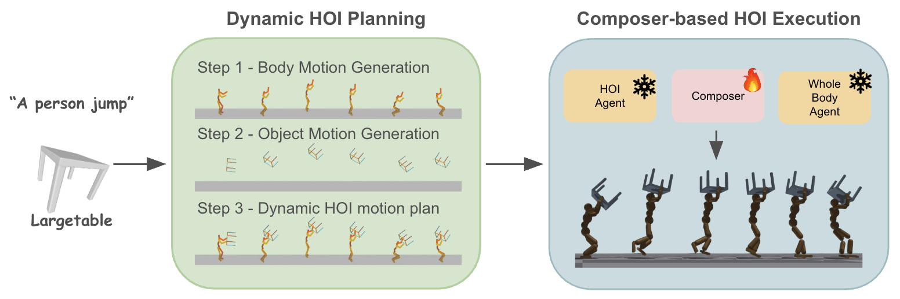
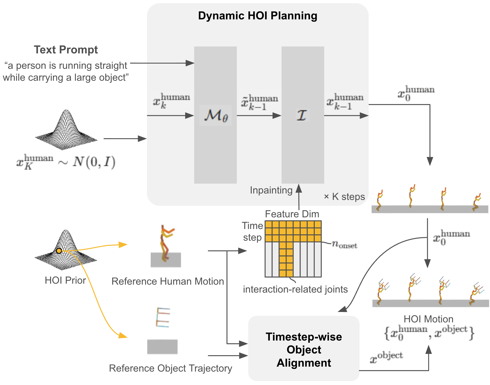
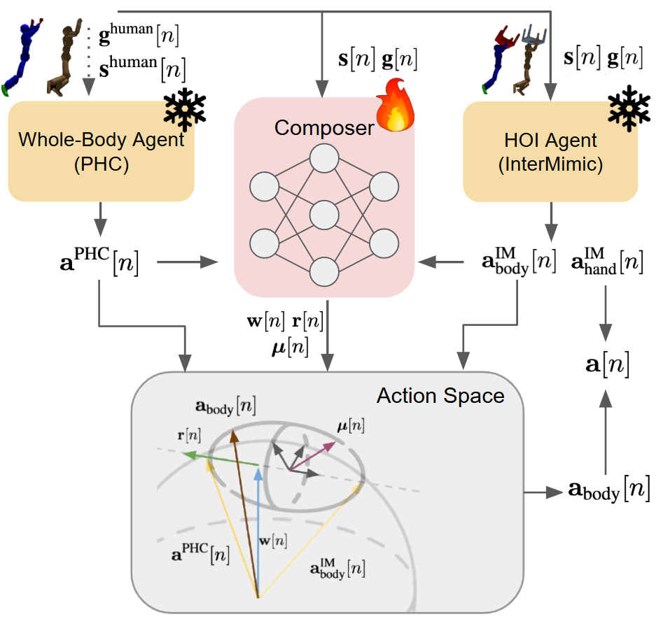
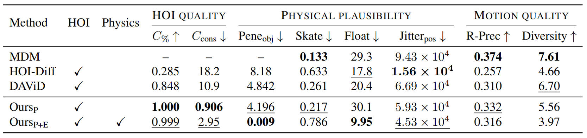
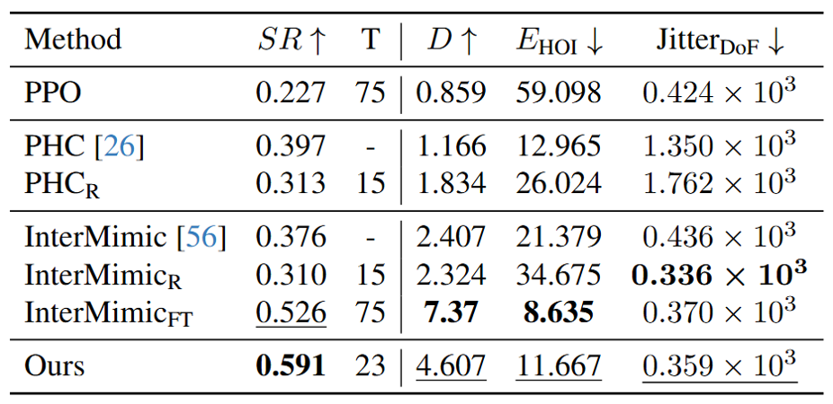
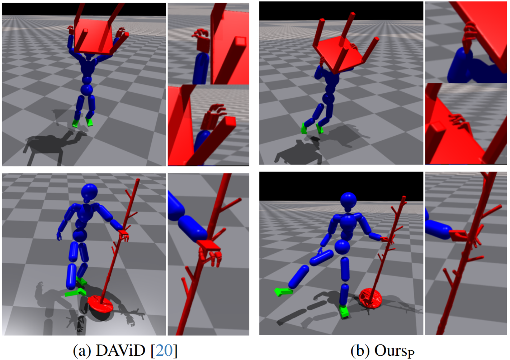
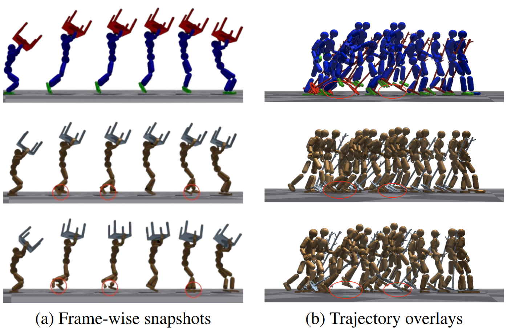
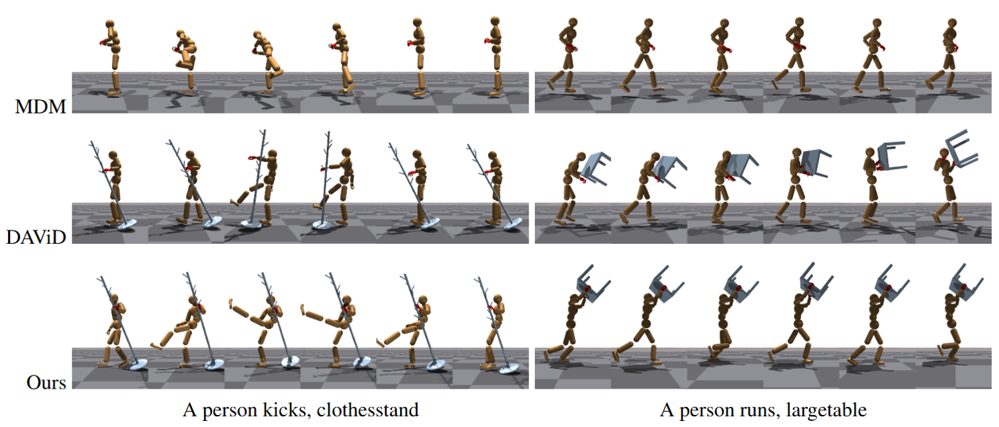
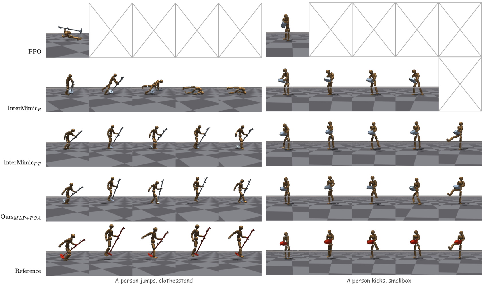

Abstract
Generating physically plausible dynamic motions of human-object interaction (HOI) remains challenging, mainly due to existing HOI datasets limited to static interactions, and pretrained agents capable of either dynamic full-body motions without objects or static HOI motions. Recent works such as InsActor and CLoSD generate HOI motions in planning and execution stages, are yet limited to either static or short-term contacts e.g. striking. In this work, we propose a framework that fulfills dynamic and long-term interaction motions such as running while holding a table, by combining pretrained motion priors and imitation agents in planning and execution stages. In the planning stage, we augment HOI datasets with dynamic priors from a pretrained human motion diffusion model, followed by object trajectory generation. This plans dynamic HOI sequences. In the execution stage, a composer network blends actions of pretrained imitation agents specialized either for dynamic human motions or static HOI motions, enabling spatio-temporal composition of their complementary skills. Our method over relevant prior-arts consistently improves success rates while maintaining interaction for dynamic HOI tasks. Furthermore, blending pretrained experts with our composer achieves competitive performance in significantly reduced training time. Ablation studies validate the effectiveness of our augmentation and composer blending.
TL;DR We blend pretrained dynamic motion and HOI imitation agents via a composer network to achieve physically plausible, contact-rich human-object interaction in physics simulation.

>Overall Framework Dynamic HOI Planning (left) generates human and object motion sequences from a text prompt. Composer-based HOI Execution (right) imitates these plans in a physics simulator by blending two pretrained experts.

Dynamic HOI Planning. We sample human motions with MDM and inject HOI motion prior during diffusion sampling: full-body injection before interaction onset and interaction-related joints after onset.

Composer-based HOI Execution. A lightweight eigenbasis composer blends actions from PHC (whole-body) and InterMimic (HOI) using per-DoF weights, enabling spatio-temporal compositional control.
Demo Video
Quantitative Results

Quantitative Comparisons on Dynamic HOI Generation. ‘HOI’ shows whether the method generates both human and object motions. ‘Physics’ indicates whether the method exploits physics-based simulation for motion generation.

Quantitative Comparisons on Dynamic HOI Imitation. SR denotes the average success rate across five motion styles, evaluated with their respective style-specific goals.
Qualitative Results

Comparisons on Dynamic HOI Planning. Contacting hands and objects are shown in red. OursP produces more accurate and temporally consistent hand-object interactions compared to DAViD [20], benefiting from our step-wise alignment even without the physics-based execution stage.

Comparisons on dynamic HOI Imitation. Reference motion (top row), motion from InterMimicFT (middle row), and motion from Ours (bottom row) for a text prompt “A person jumps, a largetable”. The two visualizations, (a) and (b), compare per-frame alignment and the overall trajectory for distinct references. As shown, our method successfully executes the dynamic jump to follow the reference, whereas InterMimicFT often collapses to a local optimum—short shuffling steps that minimize falling—rather than preserving the dynamic motion style.

Qualitative comparisons of prior-blending for HOI planning. MDM [49] does not account for object interaction, often failing to establish hand–object contacts. DAViD [20] produces unstable and inconsistent hand–object alignment. In contrast, our planning stage maintains consistent hand–object interaction while preserving the intended motion style.

Qualitative comparisons of HOI execution. Our method generates more physically plausible and dynamic motions than baseline controllers. During jumps, InterMimicFT approximates the motion through small repetitive stepping patterns, whereas Ours produces an actual two-foot lift-off. During kicks, our foot trajectories reach higher and align more closely with the reference. Frames marked with X indicate early termination due to object drops or robot falls.
Dynamic HOI Planning
A person kicks, clothesstand
A person runs, smallbox
A person jumps, largetable
A person dances, clothesstand
Dynamic HOI Execution
A person jumps, clothesstand
A person jumps, largetable
A person kicks, smallbox
A person runs, clothesstand
A person dances, clothesstand
More End-to-end Results
Dynamic motions while carrying clothesstand with left hand.
Dynamic motions while carrying clothesstand with right hand.
Dynamic motions while carrying largetable.
Dynamic motions while lifting largetable overhead.
Dynamic motions while carrying smallbox.
Poster
BibTeX
@inproceedings{cvprf2026dynamichoi,
title={Dynamic Full-body Motion Agent with Object Interaction via Blending Pre-trained Modular Controllers},
author={Nam, Sanghyeok and Kim, Byoungjun and Park, Daehyung and Kim, Tae-Kyun},
booktitle={CVPRF(CVPR Findings)},
year={2026},
}